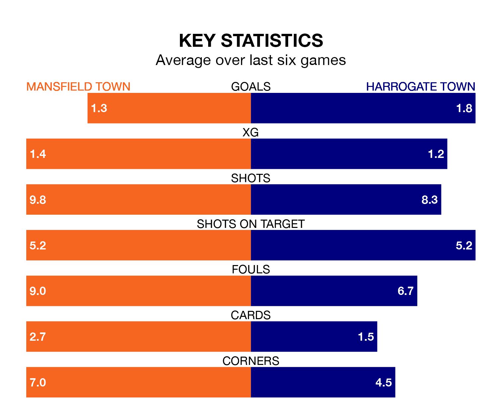

Mansfield Town are heavy favourites to keep all three points at home in Tuesday's late kick-off against Harrogate Town.
The Stags, who sit second in EFL League Two with 30 games played, are priced at 1.4 to seal victory at the One Call Stadium.
Sitting five places and 10 points behind them in the table, Harrogate are 5.8 to win with *Betting Company*, while the draw is at 4.3.
In Christy Pym, Mansfield can rely on one of the league's safest pair of hands. He has kept 12 clean sheets in his 30 appearances this season, and no 'keeper has prevented the opposition scoring more often in EFL League Two.
In Harrogate's net, Mark Oxley has three clean sheets in 16 games. He has conceded a goal every 74 minutes, 70% more often than the 123 minutes between goals for Pym.
With 52 goals in 30 games so far this season, Mansfield Town are scoring more than average in the league with 1.7 goals per game. And they are conceding fewer than average, letting in 24 goals at a rate of 0.8 per game.
Harrogate Town, meanwhile, are below average scorers, with 1.3 goals per game, compared to a league average of 1.5. They have conceded 1.2 goals per game.
In the last 10 years, Mansfield and Harrogate have played each other on eight occasions. Mansfield won one of them, Harrogate six, and they drew once.
On average, the Stags scored 0.9 goals and Harrogate 1.8 in those matches.
Their last meeting was on October 24, when Mansfield won 4-1 away.
The Stags are in mixed form in EFL League Two, with two wins and two draws from their last six games.
With four wins and two draws over that period, the away team's form is much better – they have taken 14 points from 18, compared to the hosts' eight.
Mansfield's last match was on Saturday, a 4-0 win against Forest Green Rovers, with Ollie Clarke (two), Tom Nichols and Will Swan getting the goals for the Stags.
Harrogate beat Colchester United 1-0 last time out, also on Saturday, with Jack Muldoon on the scoresheet.
Tuesday's match will be refereed by Scott Oldham, who has taken charge of nine EFL League Two games so far this season, issuing no red cards and booking 32 players. He has awarded two penalties.
The last Mansfield game Oldham refereed was a 4-1 away win against Notts County on October 14. He is yet to oversee a match featuring Harrogate this season.
Updated: 13:30 (UTC), 12/02/24